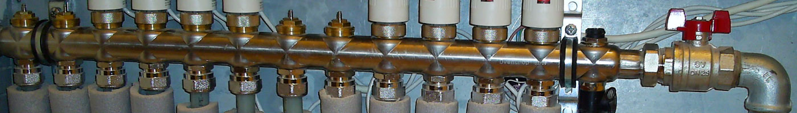
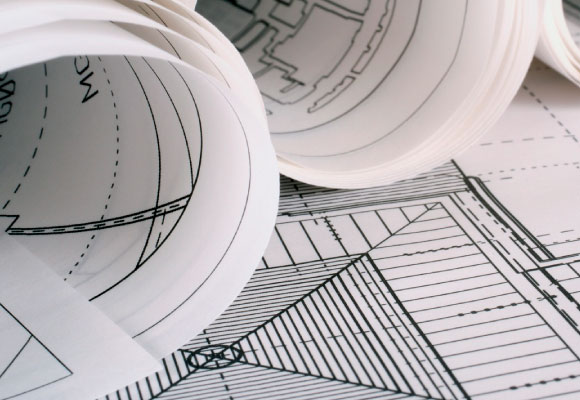
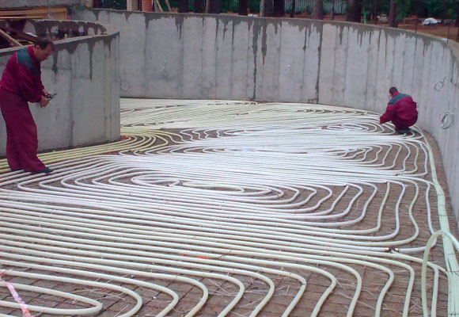
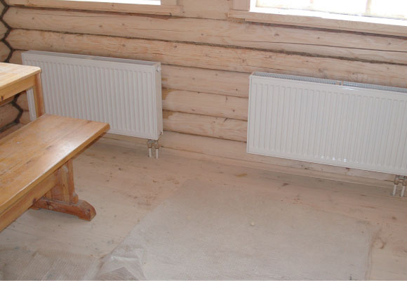

Мы реализуем также вспомогательное оборудование котельной от производителей мирового уровня, таких как Simplex и Rossweiner, а так же Kan-therm, Meibes и Buderus. Распределительный коллектор, счетчики воды, узлы подключения радиаторов - все это вспомогательное оборудование устанавливают специалисты "Вертекс Термолайн". Мы выбрали ведущие фирмы, потому что вся их продукция, и распределительный коллектор отопления, и термостатические узлы подключения и котлы ACV сделаны на самом высоком уровне качества.
Отопление

Мы реализуем также вспомогательное оборудование котельной от производителей мирового уровня, таких как Simplex и Rossweiner, а так же Kan-therm, Meibes и Buderus. Распределительный коллектор, счетчики воды, узлы подключения радиаторов - все это вспомогательное оборудование устанавливают специалисты "Вертекс Термолайн". Мы выбрали ведущие фирмы, потому что вся их продукция, и распределительный коллектор отопления, и термостатические узлы подключения и котлы ACV сделаны на самом высоком уровне качества. В перечень услуг компании "Вертекс Термолайн" входит также обвязка котельных, которая позволяет оптимизировать работу котла отопления. Компания "Вертекс Термолайн", которая является официальным дилером фирмы Kan-therm, реализует на российском рынке металлопластиковую продукцию в том числе нержавеющие фитинги. Эта продукция, составляющей которой являются фитинги нержавеющие - основа монтажа систем отопления и водоснабжения. Продажи продукции Buderus, Meibes, а так же котлов ACV и систем Kan-therm осуществляются нашей фирмой любыми объемами, мы можем выполнить индивидуальный заказ на различное оборудование и комплектующие, которые необходимы для инженерных коммуникаций вашего объекта. Спасибо за интерес, проявленный к нашей компании, а так же к нашим партнерам: ACV, Meibes, Buderus, Kan-therm. С уважением, коллектив «Вертекс Термолайн»
Услуги по проектированию, монтажу и обслуживанию систем отпления


Мы реализуем также вспомогательное оборудование котельной от производителей мирового уровня, таких как Simplex и Rossweiner, а так же Kan-therm, Meibes и Buderus. Распределительный коллектор, счетчики воды, узлы подключения радиаторов - все это вспомогательное оборудование устанавливают специалисты "Вертекс Термолайн". Мы выбрали ведущие фирмы, потому что вся их продукция, и распределительный коллектор отопления, и термостатические узлы подключения и котлы ACV сделаны на самом высоком уровне качества.

Мы реализуем также вспомогательное оборудование котельной от производителей мирового уровня, таких как Simplex и Rossweiner, а так же Kan-therm, Meibes и Buderus. Распределительный коллектор, счетчики воды, узлы подключения радиаторов - все это вспомогательное оборудование устанавливают специалисты "Вертекс Термолайн". Мы выбрали ведущие фирмы, потому что вся их продукция, и распределительный коллектор отопления, и термостатические узлы подключения и котлы ACV сделаны на самом высоком уровне качества.
Заказав услуги «отопление» у нас, вы получаете:
Выполненные работы по отоплению

Мы реализуем также вспомогательное оборудование котельной от производителей мирового уровня, таких как Simplex и Rossweiner, а так же Kan-therm, Meibes и Buderus. Распределительный коллектор, счетчики воды, узлы подключения радиаторов - все это вспомогательное оборудование устанавливают специалисты "Вертекс Термолайн". Мы выбрали ведущие фирмы, потому что вся их продукция, и распределительный коллектор отопления, и термостатические узлы подключения и котлы ACV сделаны на самом высоком уровне качества. В перечень услуг компании "Вертекс Термолайн" входит также обвязка котельных, которая позволяет оптимизировать работу котла отопления. Компания "Вертекс Термолайн", которая является официальным дилером фирмы Kan-therm, реализует на российском рынке металлопластиковую продукцию в том числе нержавеющие фитинги. Эта продукция, составляющей которой являются фитинги нержавеющие - основа монтажа систем отопления и водоснабжения. Продажи продукции Buderus, Meibes, а так же котлов ACV и систем Kan-therm осуществляются нашей фирмой любыми объемами, мы можем выполнить индивидуальный заказ на различное оборудование и комплектующие, которые необходимы для инженерных коммуникаций вашего объекта. Спасибо за интерес, проявленный к нашей компании, а так же к нашим партнерам: ACV, Meibes, Buderus, Kan-therm. С уважением, коллектив «Вертекс Термолайн»